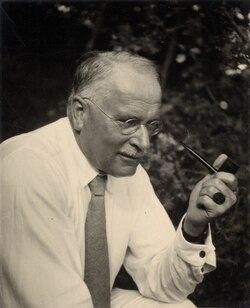

Carl Jung
Swiss psychiatrist, 1875 to 1961

The founder of analytical psychology, known for ideas such as the collective unconscious and archetypes. Late in life he wrote a book on flying saucers as a modern myth. 1
Open in the interactive Watcher
Related
- Flying Saucers: A Modern Myth of Things Seen in the Skies Flying Saucers: A Modern Myth
Sources
- Carl Jung Wikipedia